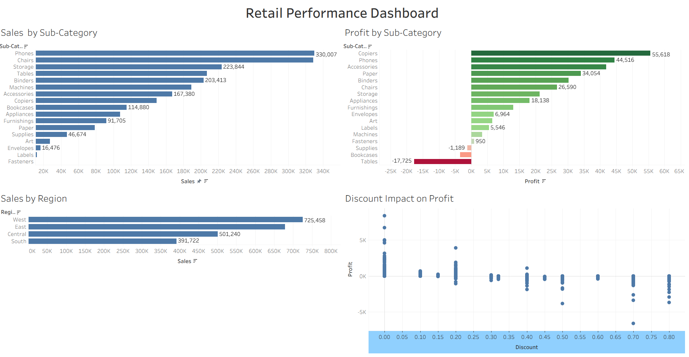
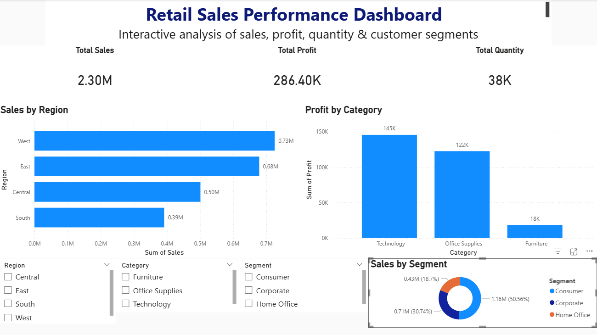

Sales performance
Compared sales across regions and product/sub-category levels to identify the strongest contributors.
A dashboard-driven analysis of sales, profit, quantity, regional performance and product/category behavior, designed to make business performance easier to explore.


Compared sales across regions and product/sub-category levels to identify the strongest contributors.
Examined profit by category and sub-category, including negative-profit segments.
Used segment-level views to understand how Consumer, Corporate and Home Office contributed to sales.
The dashboard brings both views together so product, category and regional decisions can be made with more context.